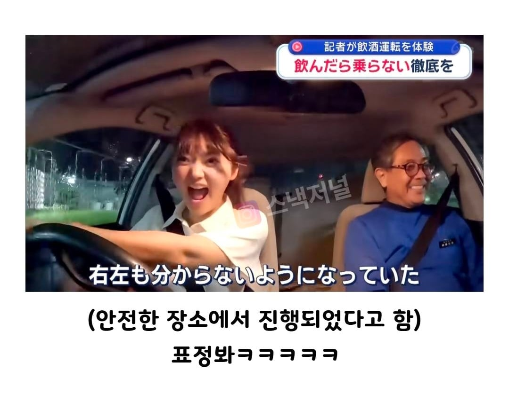

70 · 21 · 2 시간 전 · 원문

수집 당시 댓글 21개
그럴싸한데 · 4 시간 전
일째금딸중 · 4 시간 전
안녕하세요반갑습니다 · 4 시간 전
크리스차넨 · 4 시간 전
공식적으로 음주운전 가능?밟아!
영양제먹거라 · 3 시간 전
하지 말란 거 합법적으로 하면 짜릿하지 ㅋㅋ
오창섭의건드림 · 3 시간 전
캬 저것도 업적이지‘합법 음주운전 경험’누가 해봤는데 ㅋㅋㅋ
FBI · 2 시간 전
이맛에 핸들 잡는구나!!!
시간째야근중 · 2 시간 전
끼요오오옷
아니이개외안되 · 2 시간 전
얼마나 신난거야 ㅋㅋ
랑군 · 2 시간 전
몇번 박은 거임?
스타킹 · 2 시간 전
Visckffg · 2 시간 전
안전한 장소면 주차장 사유지 공터 뭐 이런덴가? ㅋㅋ거긴원래 합법아님?
↳ 답글 · EDIFICE · 2 시간 전
그러네!음주운전이 불법이 아니라 음주후도로주행이 불법이었네!
↳ 답글 · 번째유저 · 2 시간 전
거기도 술마시고 운전대 잡으면 불법임형사처분(벌금,징역)은 받음경우에따라 행정처분(면허)은 안나올수도있음
星間나그네 · 2 시간 전
년이하루처럼 · 2 시간 전
국가가 허락한 음주운전 어떻게 참냐고 ㅋㅋ
카피바라9 · 2 시간 전
옆에 아재도 ㅋㅋ
깨어있음 · 2 시간 전
이그죠!
북북춤할아버지 · 1 시간 전
예전에 티빙서 유재석이 음주 후 자전거 타면 안걸리는지 실험 했는데안잡았음 ㅋㅋㅋㅋㅋ그 당시에는 처벌을 안했나 봄지금은 처벌 받으니 하지말길
240924 · 1 시간 전
나도 저런 실험 참여 해보고 싶다 ㅋㅋㅋ소주 1병 먹고 운전, 2병 먹고 운전 ㅋㅋㅋ
에너지보존법칙 · 53 분 전
국가가 허락한 음주운전 ㅋㅋㅋ
댓글
수집 당시 댓글 21개
그럴싸한데 · 4 시간 전
일째금딸중 · 4 시간 전
안녕하세요반갑습니다 · 4 시간 전
크리스차넨 · 4 시간 전
공식적으로 음주운전 가능?
밟아!
영양제먹거라 · 3 시간 전
하지 말란 거 합법적으로 하면 짜릿하지 ㅋㅋ
오창섭의건드림 · 3 시간 전
캬 저것도 업적이지
‘합법 음주운전 경험’
누가 해봤는데 ㅋㅋㅋ
FBI · 2 시간 전
이맛에 핸들 잡는구나!!!
시간째야근중 · 2 시간 전
끼요오오옷
아니이개외안되 · 2 시간 전
얼마나 신난거야 ㅋㅋ
랑군 · 2 시간 전
몇번 박은 거임?
스타킹 · 2 시간 전
Visckffg · 2 시간 전
안전한 장소면 주차장 사유지 공터 뭐 이런덴가? ㅋㅋ
거긴원래 합법아님?
· EDIFICE · 2 시간 전
그러네!
음주운전이 불법이 아니라 음주후도로주행이 불법이었네!
· 번째유저 · 2 시간 전
거기도 술마시고 운전대 잡으면 불법임
형사처분(벌금,징역)은 받음
경우에따라 행정처분(면허)은 안나올수도있음
星間나그네 · 2 시간 전
년이하루처럼 · 2 시간 전
국가가 허락한 음주운전 어떻게 참냐고 ㅋㅋ
카피바라9 · 2 시간 전
옆에 아재도 ㅋㅋ
깨어있음 · 2 시간 전
이그죠!
북북춤할아버지 · 1 시간 전
예전에 티빙서 유재석이 음주 후 자전거 타면 안걸리는지 실험 했는데
안잡았음 ㅋㅋㅋㅋㅋ
그 당시에는 처벌을 안했나 봄
지금은 처벌 받으니 하지말길
240924 · 1 시간 전
나도 저런 실험 참여 해보고 싶다 ㅋㅋㅋ
소주 1병 먹고 운전, 2병 먹고 운전 ㅋㅋㅋ
에너지보존법칙 · 53 분 전
국가가 허락한 음주운전 ㅋㅋㅋ